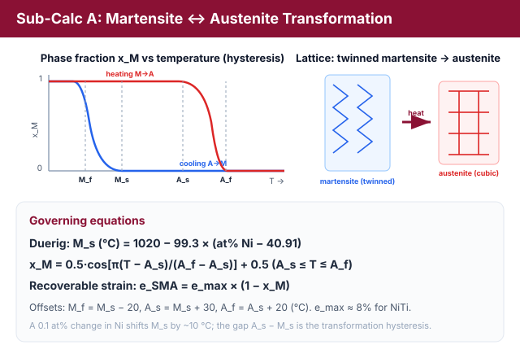
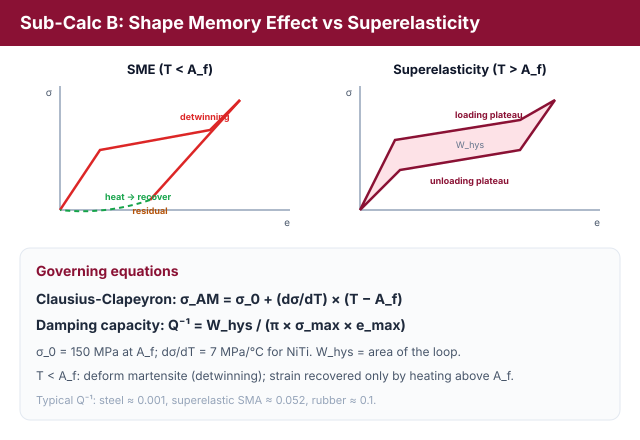
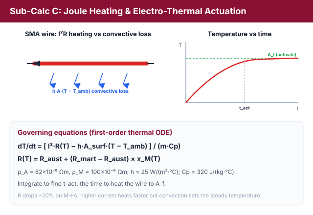
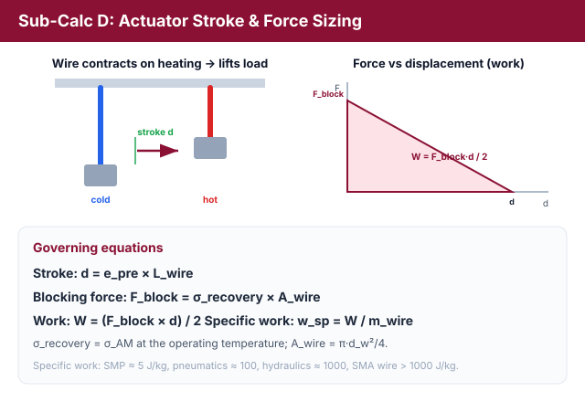
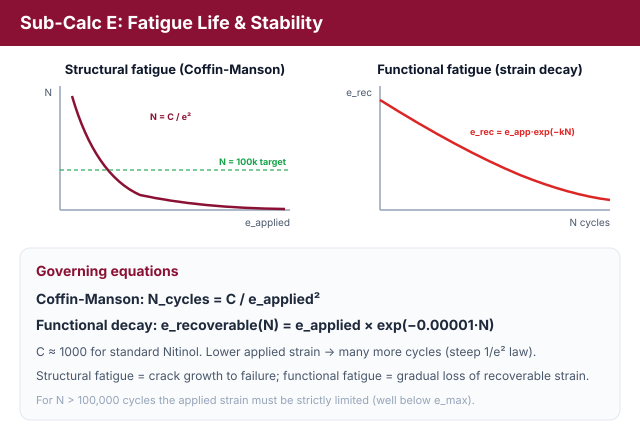

Shape Memory Alloys: Phase Transformation, Superelasticity & Wire Actuator Design
Theory: Shape Memory Alloys (SMAs) & Nitinol Actuator Design
Shape Memory Alloys (SMAs), particularly Nitinol (Ni-Ti), are active materials capable of undergoing large reversible deformations. They are widely used in biomedical stents, aerospace morphing structures, and robotic actuators. This behavior is driven by a reversible solid-state phase transformation between a high-temperature parent phase (Austenite) and a low-temperature product phase (Martensite).
1. Martensite Phase Transformation (Sub-Calc A)
Nitinol transformation temperatures depend strongly on composition. A variation of just 0.1 at% in Nickel content can shift the transformation start temperature by about 10°C. The Martensite Start temperature (M_s) can be estimated using the Duerig Empirical Formula:
Other transformation boundaries are related to M_s by characteristic offsets:
- M_f (Martensite Finish): M_f = M_s - 20°C
- A_s (Austenite Start): A_s = M_s + 30°C
- A_f (Austenite Finish): A_f = A_s + 20°C
During heating, the Martensite phase fraction (x_M) transforms to Austenite according to a cosine kinetics profile:
Where:
- x_M = 1.0 for T < A_s
- x_M = 0.0 for T > A_f
The recoverable shape memory strain (e_SMA) corresponds to the fraction of transformed martensite:
where e_max is the maximum lattice recovery strain (8% for NiTi).

Figure 1: NiTi transforms between a low-temperature martensite and a high-temperature austenite; the heating (M→A) and cooling (A→M) branches form a hysteresis loop set by M_f, M_s, A_s, A_f, and the recoverable strain follows e_SMA = e_max(1 − x_M) (Sub-Calc A).
2. Stress-Strain Behavior: SME vs Superelasticity (Sub-Calc B)
Operating temperatures relative to the Austenite Finish temperature (A_f) define the mechanical response:
- T < A_f: Shape Memory Effect (SME). Deforming the low-temperature martensite phase results in detwinning (apparent plastic strain). This strain (permanent set) is stable after unloading, but is completely recovered by heating the material above A_f to transform it back to austenite.
- T > A_f: Superelasticity (SE). Deforming the high-temperature austenite phase triggers stress-induced martensite (SIM) transformation. Unloading releases this unstable martensite, allowing the material to return completely to its original shape, forming a closed superelastic hysteresis loop.
The superelastic plateau stress (σ_AM) rises linearly with temperature above A_f according to the Clausius-Clapeyron relation:
Where:
- σ_0 = 150 MPa (base plateau stress at A_f).
- dσ/dT = 7 MPa/°C (stress-temperature phase boundary slope for NiTi).
The energy dissipated per volume during a full cycle is the area enclosed by the hysteresis loop:
The damping capacity (Q-1) is evaluated as:
Typical values: structural steel (Q-1 ≈ 0.001), superelastic SMA (Q-1 ≈ 0.052), and rubber (Q-1 ≈ 0.1).

Figure 2: Below A_f the alloy shows the shape-memory effect (residual strain recovered on heating); above A_f it is superelastic, tracing a closed stress-strain loop whose enclosed area is the dissipated energy W_hys (Sub-Calc B).
3. Joule Heating & Electro-Thermal Actuation (Sub-Calc C)
Actuation is commonly triggered by electrical current. Joule heating generates heat, while convection cools the wire. The time-varying temperature (T) is described by a first-order thermal ODE:
Where:
- Current (I): Applied electrical input.
- Resistance (R): Temperature-dependent electrical resistance. R(T) drops by ~20% during transition from Martensite to Austenite:R(T) = R_austenite + (R_martensite - R_austenite) × x_M(T)where R_austenite = ρ_A × L / A_wire and R_martensite = ρ_M × L / A_wire.
- Resistivity (ρ): ρ_A = 82 × 10-8 Ω·m, ρ_M = 100 × 10-8 Ω·m.
- Surface Area (A_surface): π × d_w × L.
- Cross-Section Area (A_wire): π × d_w² / 4.
- Convective Coefficient (h): 25 W/(m²·°C).
- Specific Heat (Cp): 320 J/(kg·°C).
- Mass (m): ρ_density × A_wire × L (density ρ_density = 6450 kg/m³).
Integrating this ODE yields the activation time (t_act) required to heat the wire to A_f.

Figure 3: Passing a current Joule-heats the wire while convection cools it; solving the first-order thermal ODE gives the temperature rise and the activation time t_act needed to reach A_f (Sub-Calc C).
4. Actuator Stroke & Force Sizing (Sub-Calc D)
To size an SMA wire for a robotic gripper or actuator:
- Stroke (d): Linear contraction displacement:d = e_pre × L_wirewhere e_pre is the applied pre-strain.
- Blocking Force (F_block): The maximum force developed by the wire when fully constrained:F_block = σ_recovery × A_wirewhere σ_recovery = σ_AM at operating temperature.
- Work Output (W): Assuming a linear spring retraction:W = (F_block × d) / 2 (Joules)
- Specific Work (w_sp):w_sp = W / m_wire (J/kg)
Comparison: SMP actuators (5 J/kg), pneumatics (100 J/kg), hydraulics (1000 J/kg), and SMA wires (>1000 J/kg).

Figure 4: On heating the wire contracts by a stroke d and can lift a load; the blocking force F_block and the force-displacement work W size the actuator and set its specific work (Sub-Calc D).
5. Fatigue Life & Stability (Sub-Calc E)
Repeated thermomechanical cycles lead to functional degradation and structural fatigue. The structural fatigue life (N_cycles) is governed by the Coffin-Manson Fatigue Law:
where C = 1000 for standard Nitinol. Functional fatigue results in a gradual loss of recoverable strain due to accumulated dislocation networks:
For a target fatigue life of N > 100,000 cycles, the applied strain must be strictly limited.

Figure 5: Structural fatigue life falls steeply as 1/e² (Coffin-Manson), while functional fatigue slowly erodes the recoverable strain with cycle count - both push the design toward a low applied strain (Sub-Calc E).